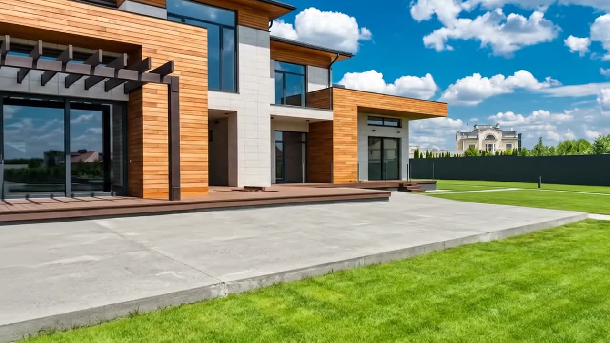

Constructeur — Saint-Jérôme et Laurentides
On ne visite pas un plan. On visite une maison.
Descendez. Vous allez y entrer.
On franchit la porte
Première arrivée
La lumière entre avant vous.
Une entrée réussie ne se décore pas, elle se calcule. Orientation du vestibule, hauteur du plafond, position de la première fenêtre : tout est décidé avant que la première pelletée de terre ne soit levée.
- Plans revus avec vous jusqu'à ce que la circulation soit évidente
- Orientation étudiée selon la course du soleil sur votre terrain
- Aucun changement facturé avant la mise en chantier
Vers l'aire ouverte
Deuxième arrivée
Le silence est un matériau.
Un plafond de neuf pieds change une pièce plus qu'un meuble ne le fera jamais. Nous construisons avec des membrures d'ingénierie, une insonorisation entre étages et des fenêtres triple vitrage — trois décisions invisibles qui s'entendent tous les jours.
Hauteur de plafond au rez-de-chaussée, de série et non en option
Valeur isolante des murs hors sol, au-dessus du code en vigueur
Vitrages par fenêtre, avec argon et intercalaire chaud
Jusqu'à la cuisine
Troisième arrivée
Ici, on répond de tout.
La cuisine est la pièce où les compromis se voient. C'est pourquoi l'ébénisterie, la plomberie et l'électricité restent chez nous : un seul interlocuteur, un seul responsable, une seule garantie.
- Rencontre sur votre terrain — on regarde le sol, la pente, les arbres
- Plans et prix fermes — le montant signé est le montant final
- Un chargé de projet — la même personne du premier jour aux clés
- Garantie 10 ans — structure et enveloppe
Prochaine étape
Venez voir une maison finie.
Nos maisons modèles se visitent sur rendez-vous, du lundi au samedi. Comptez une heure : on répond à tout, plans et prix en main.
Licence RBQ 0000-0000-00 · Saint-Jérôme, Québec